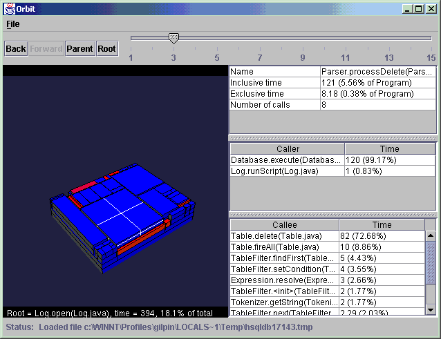

|  |
Screenshot highlighting the processDelete function in the context of Log.open.
|
Open this sample using the File/Sample Profiles/hprof/hsqldb menu
item.
This sample shows java -Xrunhprof output from the HSQLDB
demo.
- The diagram shows that the time to execute
Log.open is largely (45%) spent in Log.runScript, which is mostly (71%) spent in Parser.processDelete. Log.open is called primarily by Database.<init>, which suggests that database initialization time could be significantly optimized by speeding up the operation of Parser.processDelete.
- The diagram shows that the time to execute
Parser.processInsert is primarily (61%) spent in Parser.getValue
- Another important hot-spot is the invocation of
Log.saveProperties, which is visible in the upper-right-hand corner of the diagram. This function spends a large amount of time in Date.toString, which could probably be optimized significantly.
|